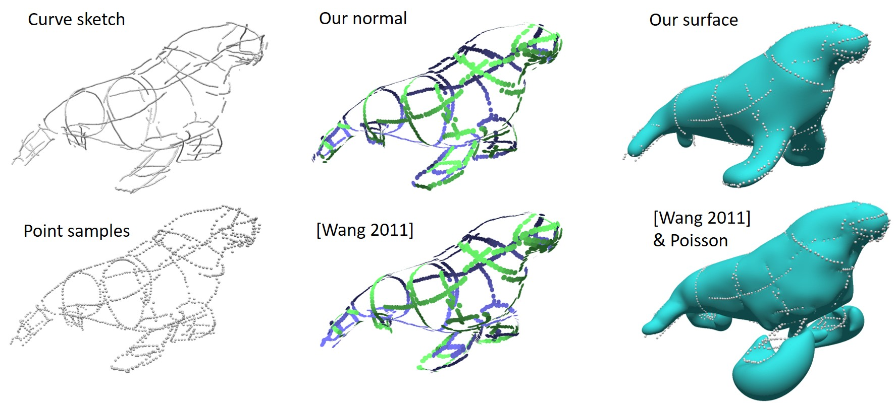
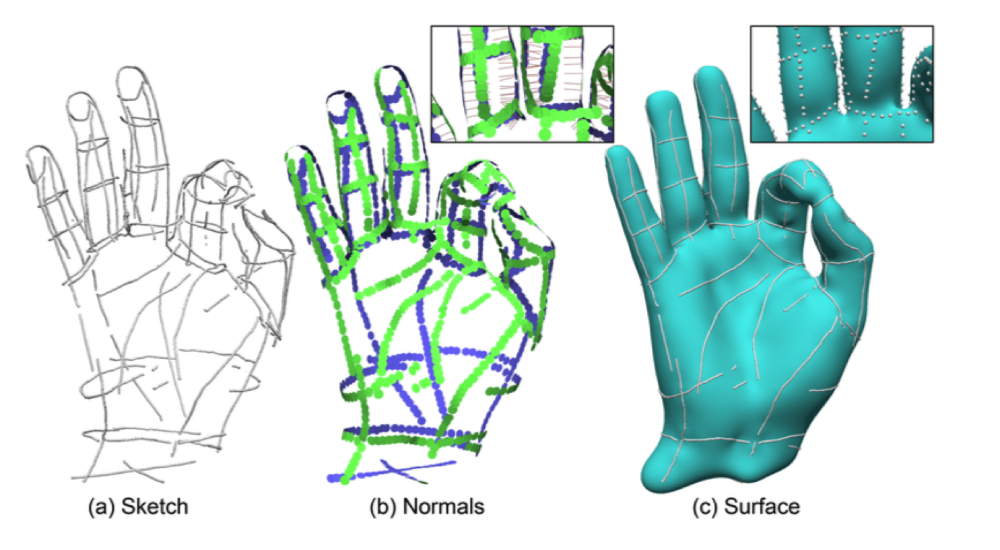
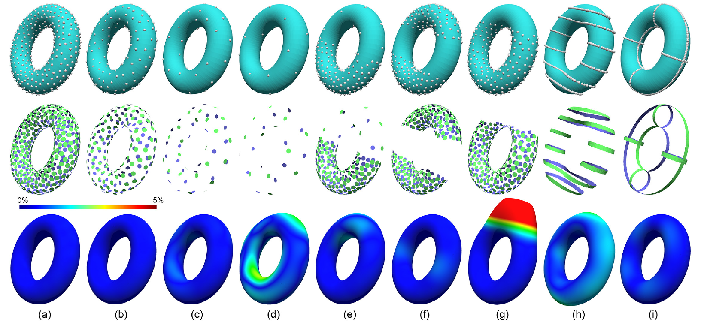

ACM Transactions on Graphics (Proc. ACM Siggraph 2019)
Authors:
Zhiyang Huang*, Nathan Carr^, Tao Ju*
Affiliations:
*Washington University in St. Louis, ^Adobe
 Teaser:
Given sparse, non-uniform, noisy and un-oriented points (bottom left)
sampled from a set of unstructured 3D curves (top left), our
variational definition simultaneously produces oriented normals
(top middle) and a smooth approximating surface (top right). The input
is challenging for state-of-the-art normal estimation methods such as
Wang's method, which fails around sparsely sampled thin features (the
flippers) (bottom middle). Incorrect normals lead to poor
reconstructions using existing implicit methods such as Screened
Poisson (bottom right).

Gallery: Our vectors (b) and surface (c) for samples from an
unstructured sketch (a). The inserts take a closer look between the
index and ring fingers (the line segments in the insert of (b) indicate
-g).

Gallery: Top row: sampling a torus surface with decreasing density
(a,b,c,d with 500, 200, 50, 25 points respectively), varying sampling
density (e), missing samples (f,g), and along 1-dimensional curves
(h,i). Middle row: optimized vectors $\bg$ visualized as oriented disks
(green/blue: front/back side). Bottom row: the VIPSS (lambda=0) colored
by distance from the original torus surface(see color bar; the
percentages are of the largest dimension of the shape).
Abtract
We
propose a new method for reconstructing an implicit surface from an
un-oriented point set. While existing methods often involve non-trivial
heuristics and require additional constraints, such as normals or
labelled points, we introduce a direct definition of the function from
the points as the solution to a constrained quadratic optimization
problem. The definition has a number of appealing features: it uses a
single parameter (parameter-free for exact interpolation), applies to
any dimensions, commutes with similarity transformations, and can
be easily implemented without discretizing the space. More
importantly, the use of a global smoothness energy allows our
definition to be much more resilient to sampling imperfections than
existing methods, making it particularly suited for sparse and
non-uniform inputs.